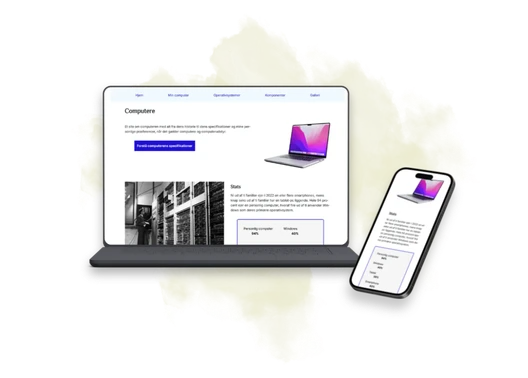
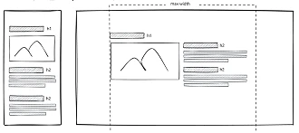
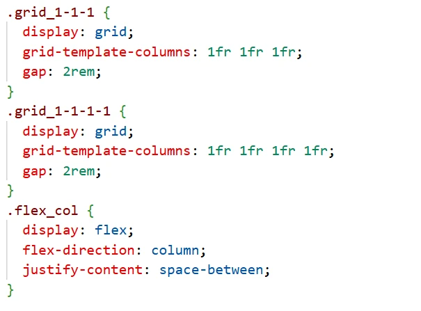
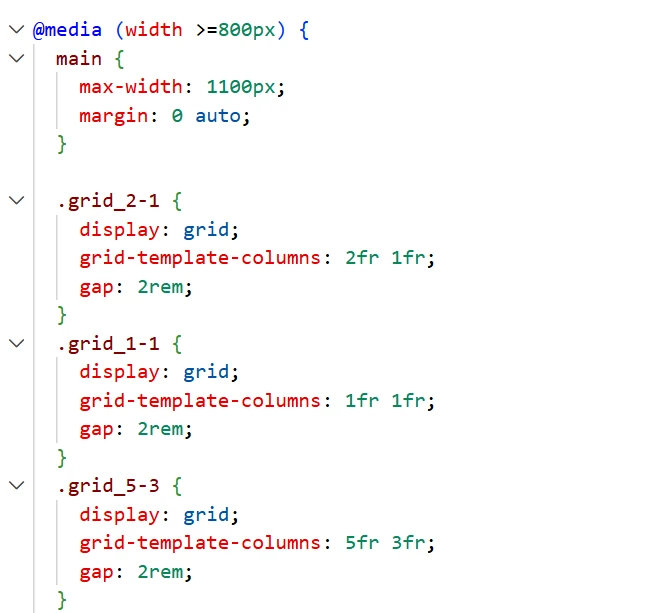

Tema 2
Grundlæggende web
I tema 2 blev jeg introduceret til designprincipper og grundlæggende webudvikling med HTML og CSS. Opgaven var først at udvikle et mobile-first site og derefter gøre det responsivt til desktop. Temaet gav mig et stærkt teoretisk og teknisk fundament for resten af semesteret og blev mit første møde med at bygge et website fra bunden.

Projektet
I dette tema arbejdede jeg individuelt med et website om computere. Vi fik udleveret størstedelen af tekst- og billedmaterialet samt en lo-fi wireframe og et layoutdiagram. Min opgave var at omsætte materialet til et fungerende website med semantisk HTML, CSS og responsivt layout.
Proces
Herunder kan processen foldes ud i mindre dele. Det giver et overblik over, hvordan jeg arbejdede fra udleveret materiale til færdigt responsivt website.
Fra wireframe til kode
Opgaven tog udgangspunkt i udleveret tekst, billeder, lo-fi wireframe og layoutdiagram. Første skridt var derfor at forstå materialet og omsætte det til en tydelig struktur, der kunne bygges op i HTML.
Vi arbejdede med mobilefirst princip, og udviklede først siden til mobile version. Herefter gjorde jeg den responsiv, så den også kunne vises i desktop version.
Her lærte jeg, at hjemmesider skal have en logisk og brugervenligtlayout samt princippet om "form følger funktion."
Det var også en god måde at træne omsætning af design teori til praksis.

HTML og semantisk markup
Da temaet var mit første rigtige møde med kode, handlede meget af processen om at lære de grundlæggende HTML-elementer og forstå, hvordan man opbygger en side semantisk korrekt.
Jeg arbejdede blandt andet med header, nav, main, section, article og footer. Det gav mig en forståelse for, hvordan HTML ikke kun handler om indhold, men også om struktur og semantik.
CSS, Grid og Flexbox
I CSS arbejdede jeg med grundlæggende styling, grid og flex. Det var her, jeg begyndte at forstå, hvordan man kan styre layout, afstande og placering af elementer på en webside.
Det sværeste var de stilistiske detaljer. På baggrund af viden om design, gestaltlove og visuelt hierarki, kunne jeg ofte se, at noget ikke fungerede helt visuelt. Men samtidig havde jeg endnu ikke lært alle teknikkerne til at rette det. Det har senere gjort mig mere opsøgende, når jeg arbejder med kode og design.

Mobile-first og responsivt design
Opgaven skulle først udvikles som et mobile-first site og derefter tilpasses til desktop. Det gav mig en tidlig forståelse for, at responsivt design ikke kun handler om at få siden til at passe på forskellige skærme, men om at prioritere indhold og layout fra starten.
Arbejdet med responsivitet gennem media queries blev et vigtigt fundament, som jeg har anvendt i alle efterfølgende projekter.

Validering og problemløsning
Jeg arbejdede også med validering af kode. Det er et værktøj, jeg har brugt meget siden - da det kan anvendes til at kontrollere korrektheden af koden, og identificere hvor der er fejl.
Vi blev også introduceret til MDN Web Docs, som jeg senere har brugt meget. Det lærte mig, at man som webdesigner ikke behøver kunne alt udenad, men skal kunne finde, forstå og anvende relevant dokumentation.
Hvad jeg ville gøre anderledes i dag
I dag ser jeg på sitet med andre øjne. Jeg kan se, at det løste opgaven og var korrekt bygget op, men jeg kan også se, hvor meget mere jeg nu kan gøre med layout, detaljer og visuel sammenhæng.
Hvis jeg skulle lave sitet igen, ville jeg stadig starte med en tydelig semantisk struktur, men jeg ville arbejde mere bevidst med spacing, typografi, visuel rytme og de små detaljer, der får en side til at fremstå mere færdig og professionel.
I det hele taget, er det interessant at se, hvor meget jeg har lært siden da.
Refleksion
Når jeg ser tilbage på tema 2, kan jeg tydeligt se, hvor meget jeg har lært siden. Sitet var teknisk velfungerende og semantisk korrekt opbygget, men mit fokus var dengang mest på at forstå de basale principper i HTML og CSS. I dag ville jeg kunne arbejde mere bevidst med de visuelle detaljer, fordi jeg har fået flere metoder og tekniske muligheder at trække på.
Noget af det mest lærerige var, at jeg blev tidligt færdig og derfor kunne hjælpe andre medstuderende med deres sider. Det styrkede min egen forståelse, fordi jeg skulle forklare kode og struktur videre til andre. På den måde blev temaet ikke kun en introduktion til webudvikling, men også en øvelse i at forstå og formidle det, jeg selv havde lært.